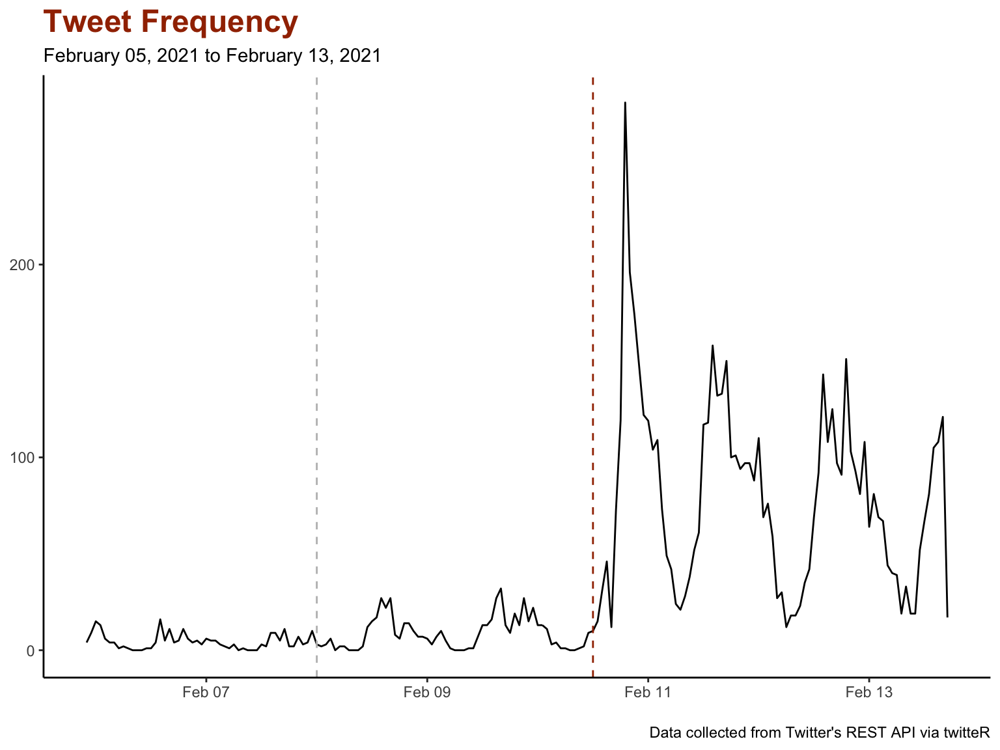
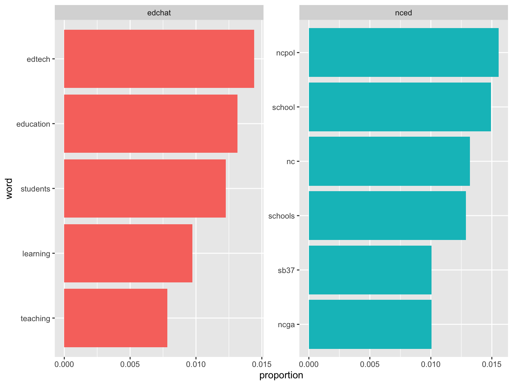
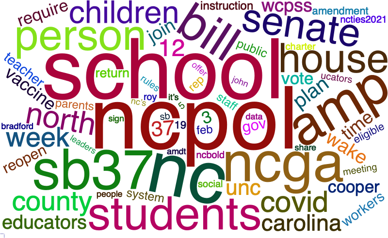

For this week’s independent analysis assignment, I’m pulling tweets from Twitter following Jason Lee’s tutorial “Pulling Tweets into R” from
https://towardsdatascience.com/pulling-tweets-into-r-e17d4981cfe2
This QR code will take you to the link above.
I would like to know what people have been tweeting about education most recently, particularly for our state, North Carolina. So, I focused my search on tweets that used the following hashtags:
Searching Twitter resulted in 6,912 tweets that used the hashtags of #edchat or #nced.
I asked for 5000 tweets for each hashtag as a search term, but interestingly, #nced only returned 1,912 of the results.
Because pulling tweets can take some time, I pulled the data and saved it to a csv that I’ve used to read selected columns in here.
Here’s a glimpse:
## Rows: 6,912
## Columns: 8
## $ text <chr> "RT @sdelafosse: Join me and thousands of educators fro…
## $ favoriteCount <dbl> 0, 0, 0, 0, 0, 0, 0, 3, 0, 0, 0, 0, 0, 0, 0, 0, 0, 0, 0…
## $ created <dttm> 2021-02-13 17:11:33, 2021-02-13 17:11:27, 2021-02-13 1…
## $ retweetCount <dbl> 1, 1, 0, 2, 2, 0, 1, 0, 2, 0, 132, 4, 1, 0, 1, 0, 132, …
## $ isRetweet <lgl> TRUE, TRUE, FALSE, TRUE, TRUE, FALSE, TRUE, FALSE, TRUE…
## $ tag <chr> "edchat", "edchat", "edchat", "edchat", "edchat", "edch…
## $ screenName <chr> "MariaAngelesSua", "loribrasel5", "Wybo_in_Regina", "mo…
## $ id <dbl> 1.360638e+18, 1.360638e+18, 1.360638e+18, 1.360637e+18,…Here is the frequency of education tweets since February 5th. The grey dashed line shows where the new week begins on Monday and the red dashed line occurring at noon on February 10th shows where a flurry of tweeting began.

Maybe the most retweeted tweet from NC on February 10th will provide a clue…
Starting Feb. 24, Mandy Cohen says anyone who must work in-person in a North Carolina childcare or PreK-12 facility will be eligible to get COVID vaccine. This include school districts, charter schools, private schools, PreK centers, Head Start. #nced #ncpol #coronavirus
— Keung Hui (@nckhui) February 10, 2021
After filtering out retweets so the results would not be skewed, the most frequently used words in the education tweets are shown here. The results were filtered by words used more than 50 times.
Notice that the #edchat tweets seem to suggest discussions around edtech and education in general, but the #nced tweets suggest discussions that reflect state politics that affect education.

For a closer look at NC, this word cloud shows the top 75 most frequently used words in tweets that used the #nced hashtag.

The analysis of education tweets suggest that recently the focus on education here in our state is on the pandemic and state politics.
In particular, sb37 occurs quite frequently in the #nced tweets and refers to NC Senate Bill 37 entitled “In-Person Learning Choice for Families.”
This project uses the Reveal.js presentation format of R Markdown. It also makes use of R packages such as twitteR, tweetrmd, tidyverse, and tidytext.
If you’d like to learn more about the techniques used in this presentation you can get the R project from my ECI 588 Text Mining Github repo:
https://github.com/jennhouchins/EdTweets.git
This QR code will take you to the link above.